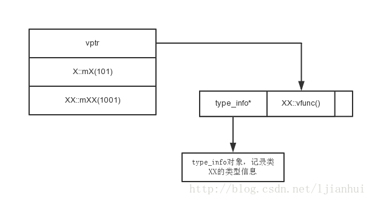
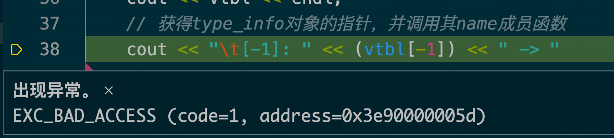

这次想研究下 dynamic-cast 的原理，研究到最后发现，研究的其实是 RTTI 的原理。
# 1.typeid
《Type Conversions》上次研究类型转换时的这篇文档最后还讲到了一个运算符 ——typeid，使用这个运算符，会返回一个 type_info 对象的引用，这个对象的结构大致如下：
class type_info { | |
// data | |
public: | |
virtual ˜type_info(); //is polymorphic | |
bool operator==(const type_info&) const noexcept; // can be compared | |
bool operator!=(const type_info&) const noexcept; | |
bool before(const type_info&) const noexcept; // ordering | |
size_t hash_code() const noexcept; // for use by unordered_map and the like | |
const char* name() const noexcept; // name of type | |
type_info(const type_info&) = delete; // prevent copying | |
type_info& operator=(const type_info&) = delete; // prevent copying | |
}; |
这个对象包含了一个对象的类型信息，也就是 c++ 中的 RTTI（Runtime Type Identification，即运行时类型识别）。
有趣的是，当 typeid 作用于指针时，会返回指针自身的类型，但当作用于派生类（有虚函数）的对象或引用时，则会返回这个对象实际的类型。
下面是测试代码：
现在有基类 SceneEntry 和派生类 SceneUser
class SceneEntry | |
{ | |
public: | |
SceneEntry(unsigned long long id, const std::string& name); | |
virtual ~SceneEntry() = default; | |
}; | |
class SceneUser : public SceneEntry | |
{ | |
public: | |
SceneUser(unsigned long long id, const std::string& name); | |
virtual ~SceneUser() = default; | |
}; | |
... | |
int main() | |
{ | |
SceneEntry* entry = new SceneUser(1, "xiaoming"); | |
SceneUser user(1,""); | |
SceneEntry& entry2 = user; | |
std::cout << typeid(entry).name() << std::endl; | |
std::cout << typeid(*entry).name() << std::endl; | |
std::cout << typeid(entry2).name() << std::endl; | |
return 0; | |
} |
以上代码可以得到以下输出：
> ./test | |
P10SceneEntry | |
9SceneUser | |
9SceneUser |
可以看到对于指针类型，他返回的就是指针声明时的类型，上面的 P 就表示指针，而引用和类返回的则是他们实际对应的派生类。不过这种获取实际派生类时依赖的是虚函数表，因此没有虚函数的时候也就无从知晓了。
当去掉虚函数以后，输出就变为了：
P10SceneEntry | |
10SceneEntry | |
10SceneEntry |
最终输出的都是基类。
# 2.dynamic_cast
通过了解 type_info，也就基本知道 dynamic_cast 的原理了，其实它就是利用 RTTI 去判断一个指针所指的类实际是什么的，不过这也依赖于虚函数表，所以当你 dynamic_cast 一个没有虚函数的类时就会报错（static_cast 不会受影响）：
error: 'SceneEntry' is not polymorphic |
# 3.RTTI 的原理
所以最终，要研究 typeid 和 dynamic_cast 这两个运算符的原理，本质其实是研究 RTTI 的原理，这次主要通过这篇博文《C++ 对象模型之 RTTI 的实现原理》来研究，还是增添了不少对 c++ 内存布局的理解的。
我们可以通过以下代码来进行试验：
class X | |
{ | |
public: | |
X() | |
{ | |
mX = 101; | |
} | |
virtual void vfunc() | |
{ | |
cout << "X::vfunc()" << endl; | |
} | |
private: | |
int mX; | |
}; | |
class XX : public X | |
{ | |
public: | |
XX(): X() | |
{ | |
mXX = 1001; | |
} | |
virtual void vfunc() | |
{ | |
cout << "XX::vfunc()" << endl; | |
} | |
private: | |
int mXX; | |
}; |
首先定义两个有继承关系的类，并且定义一个虚函数，然后通过以下代码来验证一个对象的布局：
typedef void (*FuncPtr)(); | |
int main() | |
{ | |
XX xx; | |
FuncPtr func; | |
char* p = (char*)&xx;// 此处声明为 char * 的原因主要是为了 + sizeof (xx) 时加对应 n 个字节，从而方便获取 n 个字节后的地址 | |
// 获得虚函数表的地址 | |
void** vtbl = (void**)*(void**)p; // 此处声明成二级指针也是为了在下面 [] 运算时按指针的步长取 | |
// 输出虚函数表的地址，即 vptr 的值 | |
cout << vtbl << endl; | |
// 获得 type_info 对象的指针，并调用其 name 成员函数 | |
cout << "\t[-1]: " << (vtbl[-1]) << " -> " << ((type_info*)(vtbl[-1]))->name() << endl; | |
// 调用第一个 virtual 函数 | |
cout << "\t[0]: " << vtbl[0] << " -> "; | |
func = (FuncPtr)vtbl[0]; | |
func(); | |
// 输出基类的成员变量的值 | |
p += sizeof(int**); | |
cout << *(int*)p << endl; | |
// 输出派生类的成员变量的值 | |
p += sizeof(int); | |
cout << *(int*)p << endl; | |
return 0; | |
} |
运行得到以下输出：
> ./classStructTest | |
0x105127110 | |
[-1]: 0x105127130 -> 2XX | |
[0]: 0x1051261d0 -> XX::vfunc() | |
101 | |
1001 |
由此可以得到 c++ 中的一个包含虚函数的 XX 对象的大致布局：

一个对象的内存第一段会保存一个类的虚函数表的指针，指针指向了虚函数表，即一个函数指针数组，而在这个虚函数表指针指向的地址前一个位置保存了一个 type_info 的指针。而虚函数表指针后面跟着的分别是父类的成员变量和自身的成员变量。
但当我们把虚函数去掉以后，再运行代码就会报错：

因此这种没有多态性质的类内存结构是不同的。这种类的 RTTI 信息在编译后便可以确定，所以猜想可能编译时就带入地址了（不过没查到相关资料，待考证）。因此不需要动态的通过类的虚函数表中的 type_info 去确定。
# 4. 总结
通过 RTTI 可以让 c++ 在运行时去确定一个对象的实际类型，从而我们可以利用 dynamic_cast 去正确地转换。看到大佬代码用了这么多指针的转换，越来越觉得它是个很自由的语言，它应该是高级语言中最接近底层，最容易操作内存的语言了，不过这也对使用者有较高的要求，学习之路漫漫呀～